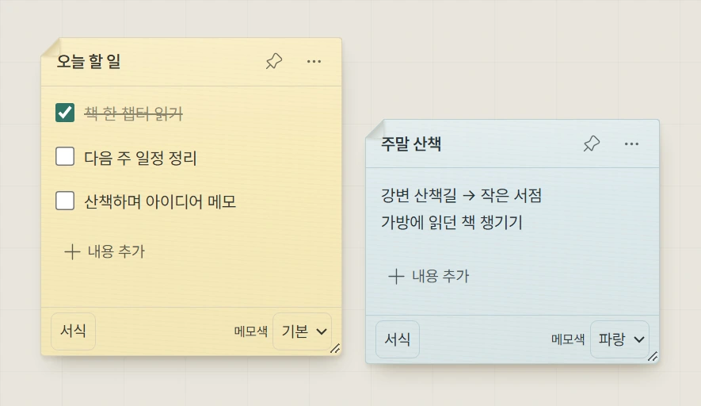

데스크톱 메모 앱 v1.12.0
흩어진 생각을
한 보드에.
필요한 메모는 바탕화면에 고정하고, 할 일과 일정은 보드와 캘린더에서 함께 정리하세요.
다운로드 보기 ↓메모와 첨부파일은 내 컴퓨터에 저장됩니다.

운영체제별 다운로드
컴퓨터에 맞는 메모 보드 1.12.0을 선택하세요.
설치와 업데이트
처음 설치하거나 새 버전으로 바꿀 때 확인하세요.
1.12.0에서 달라진 점
네 가지 테마마다 메모지의 질감과 모서리가 달라졌습니다. 리퀴드 글라스의 테마 목록을 읽기 쉽게 다듬고, 앱 아이콘과 좁은 창의 캘린더 상세 화면도 개선했습니다. 전체 릴리즈 노트 보기
운영체제별 설치 방법
- Windows
- 실행 중인 메모 보드를 알림 영역에서 완전히 종료하고 EXE 설치 파일을 여세요.
- macOS
- Apple 메뉴의 ‘이 Mac에 관하여’에서 칩을 확인하세요. 해당 ZIP을 풀고 앱을 응용 프로그램 폴더로 옮기세요.
- Linux
- AppImage 파일 속성에서 실행 권한을 부여한 뒤 여세요. 외부 캘린더 주소를 저장하려면 데스크톱 보안 저장소가 필요합니다.
기존 메모와 업데이트
새 버전은 이 페이지에서 직접 내려받아 적용합니다. 같은 사용자 계정으로 업데이트하면 사용자별 앱 데이터 폴더의 메모와 첨부파일을 계속 사용할 수 있습니다. 앱 설정에서 백업할 수 있습니다.
계정과 캘린더 연결
메모 보드와 내 일정은 계정 없이 사용할 수 있습니다. Google·Outlook 일정을 함께 보려면 앱의 캘린더 관리에서 iCal 주소를 연결하세요. 외부 일정은 읽기 전용입니다.
파일 무결성과 운영체제 보안 안내
공개 GitHub Release에 게시된 SHA-256 목록과 내려받은 파일의 해시를 비교할 수 있습니다. Windows 설치 파일에는 코드 서명이 없으며 macOS 앱에는 Developer ID 서명과 Apple 공증이 없어 실행이 제한될 수 있습니다.